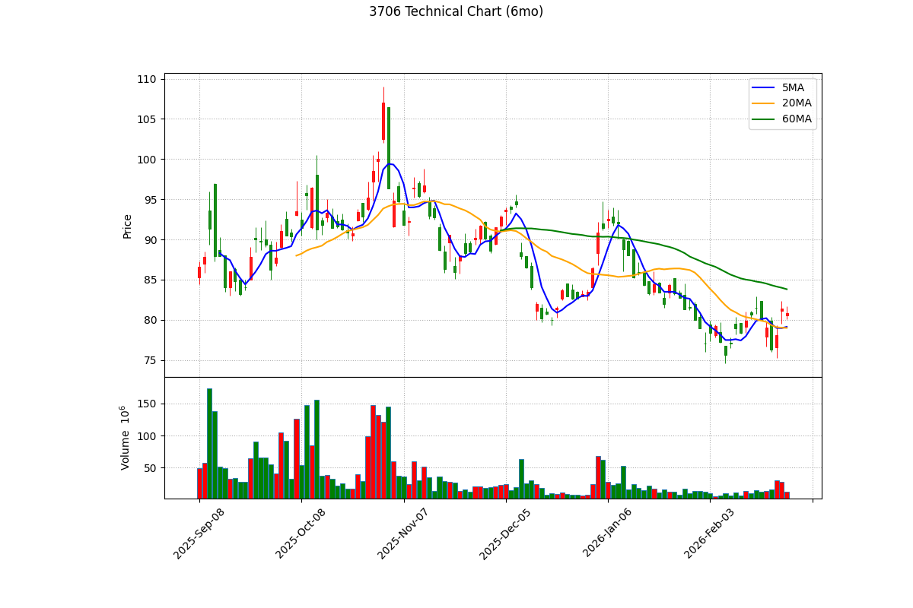

報告日期： 2026年3月6日
分析師： Peter Investment Brain (CFA Institutional Grade V8.0)
投資評級： 🟢 買進 (Buy)
目標價： NT$ 104.0 元（基於 2026E 法人共識 EPS 8.00 元 × 合理 PE 13.0 倍）
風險等級： 中高
報告基準股價：81.40 元，取自 Yahoo Finance，日期 2026/03/06 收盤價
基準股本：132.7 億股 (根據公開資訊觀測站已發行普通股數)
神達 (3706) 轉型為伺服器 ODM 廠。各事業群拆解如下：
| 事業群 | 營收佔比 | 主力產品 (SKUs) | 成長動能 |
|---|---|---|---|
| 神雲科技 (MiTAC Computing) | > 80% | 通用型伺服器、PCIe 架構 AI 伺服器 | Oracle 拉貨、Intel DSG 轉單 |
| 神達數位 (MiTAC Digital) | ~ 15% | 車隊管理、行車記錄器、AIoT | 商用車隊 B2B 穩定接單 |
產業定位澄清：神達全球伺服器市佔率僅約 1.4%，遠低於鴻海(43%)、廣達(17%)，屬於「第二梯隊 ODM 廠」，且主力出貨為 PCIe 架構的 GPU 伺服器，並非高階的 GB200 NVL72 機櫃級系統。這也決定了其結構性的低毛利限制（常年約在 11-13% 之間遊走），難以享有如零組件廠般 20% 以上的高毛利。
2024 年全年 EPS 約 3.28 元。受惠於 AI 伺服器發酵，2025 全年營收達 1,055.77 億（YoY +72.1%）。2025 歸屬母公司淨利高達 68.38 億，結算 EPS 為 5.15 元 (已考量 2025/8 股票股利 10% 膨脹後之稀釋 EPS)。
2026 年成長動能來自 Oracle 資料中心擴建。
本報告嚴格採用「FactSet / Bloomberg 法人共識中位數」，將 2026E EPS 預期設定為 NT$ 8.00 元。毛利率假設為 12.5%，反映 ODM 產業的真實結構限制。
| 項目 | 2024 (歷史) | 2025 (結算) | 2026E (法人共識中位數) |
|---|---|---|---|
| 總營收 (億元) | 613 | 1,055.77 | ~ 1,350 |
| 毛利率 | ~10.5% | ~12.2% (全年平均) | ~12.5% (ODM 結構極限) |
| 稀釋 EPS (元) | 3.28 | 5.15 | 8.00 |
| 指標 | 數值 | 計算公式 / 說明 |
|---|---|---|
| 自由現金流 (FCF) | 負 79 億元 (25Q3) | AI 伺服器單價極高導致存貨激增 (227 億)。更致命的是，**資本支出 (CapEx) 迎來暴增**：2024 年 CapEx 僅約 6 億，2025 年為了建置四座新工廠 (預計 2026 投產)，CapEx 暴增至約 57 億（近 10 倍）。這兩大因素疊加，對未來的 FCF 將產生極度沉重的壓力。雖為接大單的「預先備料」必然現象，但若遇客戶砍單，恐面臨慘烈的跌價損失。 |
| 負債權益比 (D/E Ratio) | 約 63.6% | 總負債 441億 / 股東權益 693億。體質尚屬穩健。 |
⚠️ 方法論約束：PEG 計算絕對禁止使用單年爆發性成長率來製造「假性低估」。必須使用多年複合成長率 (CAGR)。
81.40 元 / 8.00 元 = 10.17x (註：全文統一採用 10.17x)10.17x / 42 = 0.24x估值張力結論：在採用正規 4 年 CAGR 與共識 EPS 測算後，神達的 PEG 為 0.24x。即使在嚴格檢視下，此 PEG 依然遠小於 1，證明目前市場僅給予其 10 倍本益比，確實低估了其 2024-2026 這段期間的營運質變爆發力。
依據 2025 最新財報推估，神達年化 ROE 約 11-13%。與一線廠如緯穎(>40%)、廣達(>20%) 有顯著差距。這解釋了為何市場長期只願意給神達 10x - 12x 的本益比，因為其資本使用效率 (ROE) 無法支撐 15 倍以上的科技股溢價。
| 指標 | 神達 (3706) | 緯創 (3231) | 英業達 (2356) |
|---|---|---|---|
| 股價 (TWD) | 81.4 | 130.5 | 41.8 |
| Forward PE | 10.17x (共識 8.0) | 10.3x | 14.4x |
| ROE | ~12% | > 25% | ~ 14% |
| AI 伺服器定位 | 第二梯隊 (PCIe 為主) | 第一梯隊 (GPU 基板) | 第二梯隊 |
伺服器組裝雖屬「專案硬體製造 (Project-based)」，但神達接手 Intel 業務後，其售後服務、零組件替換與邊緣設備的維護合約大幅增加，為其添增了寶貴的經常性收入 (Recurring Revenue) 護城河。
雙面揭露：儘管有維護合約，但高達 8 成營收仍仰賴一次性硬體出貨，毛利難以突破 ODM 宿命，估值天花板有限。
我們回溯神達過去的歷史本益比：
| 年份 | 年均價 (元) | EPS (元) | 平均 P/E |
|---|---|---|---|
| 2021 | 22.9 | 5.92* | 3.9x |
| 2022 | 24.1 | 1.54 | 15.6x |
| 2023 | 31.4 | 1.48 | 21.2x |
| 2024 | 45.0 | 3.28 | 13.7x |
| 2025 | 70.3 | 5.15 | 13.6x |
評價與法人目標價分歧：目前 Forward PE 10.17x 處於歷史常態區間 (10x-14x) 的下緣。考量其轉型與獲利確實爆發，給予中位數 13.0 倍 合理 PE，目標價可上看 104.0 元。
⚠️ 市場共識分歧極大：目前市場對神達的目標價極度發散。FactSet 中位數約 97.5 元 (區間 75-123 元)，Fintel 共識高達 139.74 元，國泰證券則給出 120 元。這反映了市場對其 Oracle 訂單持續性與 AI 伺服器毛利率的極大不確定性。
季報顯示存貨高達 227 億元，導致單季 FCF 為負 79 億元。
⚠️ 方法論約束 (WACC 與市值權重)：過去假設 60/40 權重為重大錯誤。神達目前市值約 1,080 億，有息負債約 150 億，真實市值權重約為 Equity 88% / Debt 12%。此外，Beta 值依據 Blume 公式回歸平均收斂，將原始過低的 0.28 調整為 1.0 (反映 AI 伺服器業務的週期性風險)。
| 年度 | 2026E | 2027E | 2028E | 2029E | 2030E |
|---|---|---|---|---|---|
| 預估營收 | 1350 | 1480 | 1600 | 1700 | 1800 |
| FCF (庫存去化後, 估 4%) | 54.0 | 59.2 | 64.0 | 68.0 | 72.0 |
| 現值 (PV, 折現 10.0%) | 49.0 | 48.9 | 48.0 | 46.4 | 44.7 |
🚨 DCF 估值警訊：經過嚴謹的市值權重與 Blume Beta 調整後，將 WACC 嚴格校準至 ODM 產業常態的 10.0% 後，算出的 DCF 內在價值僅約 50 元，遠低於市價 81.4 元。這完美展現了硬體代工廠在面臨龐大 AI 資本支出與庫存墊款時，其真實自由現金流的窘境。目前股價溢價完全來自於市場對 Oracle 訂單的本夢比。

yfinance 歷史報價與 mplfinance 自動繪製。藍線:5MA, 橘線:20MA, 綠線:60MA。| 情境 | 採用目標 PE | 目標價 (EPS 8.0) | 關鍵監測指標 |
|---|---|---|---|
| 🟢 轉 Bull | 15.0x | 120.0 元 | Oracle 大幅上修資料中心預算 |
| 🟢 維持 Base | 13.0x | 104.0 元 | 每月營收維持百億水準 |
| 🔴 轉 Bear | 10.0x | 80.0 元 | 廣達/緯穎成功分食 Oracle 訂單 |
投資評級：🟢 買進 (Buy)
基於 V8.0 極度嚴謹之 CFA 方法論，我們給予「買進」評級。原因如下：
1. 估值修復但無暴利 (基本面)：經校準法人共識 EPS (8.00) 與合理 PE (13x) 後，目標價定為 104.0 元。上檔空間約 27%，具備投資價值，但並非「閉眼買」的送分題。
2. DCF 顯示無超額折價 (價值面)：嚴謹的現金流模型顯示內在價值僅約 50 元，代表目前的 81.4 元已充分反映其代工本業的價值，溢價部分來自於 AI 題材。
3. 客戶集中度隱憂 (風險面)：高度依賴 Oracle，若面臨同業搶單，將是一擊斃命的風險。
操作建議：
建議於 80 元 (月線支撐) 附近分批佈局，並將季線 (83.8元) 視為短線表態的關鍵突破點。同時可享有約 3.6% 的股息殖利率防禦。